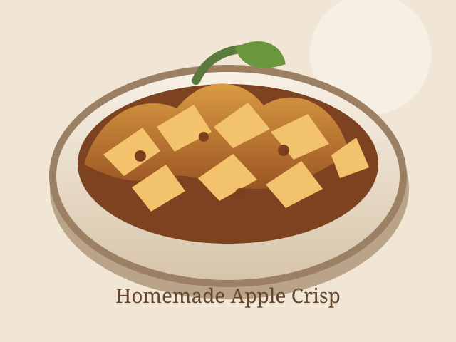

Apple Crisp
This apple crisp recipe is a simple yet delicious fall dessert that's great served warm with vanilla ice cream.

This apple crisp recipe is a simple yet delicious fall dessert that's great served warm with vanilla ice cream.